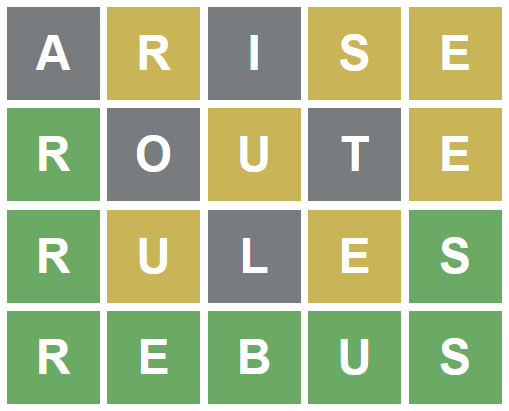

Do lançamento à escala diária.
16 JULprimeiro
Daily Dive
Daily Dive
≈600 MILjogadores/dia
em 21 OUT
em 21 OUT
Estimativa baseada em 550–610 mil respostas por pergunta: uma resposta corresponde a uma participação diária.
Digital Business Modeling · Pitch final
Antes dos números
Um jogo diário em que cada pessoa tem seis tentativas para descobrir uma palavra de cinco letras.

CAPTURA ILUSTRATIVA · WIKIMEDIA COMMONSPrimeiro, a validação
O risco inicial era descobrir se as pessoas realmente queriam jogar.
Depois, a localização
O caso comprova velocidade e distribuição. Não há receita pública do Termo comprovada.
A oportunidade
Não basta traduzir a tela.
É preciso localizar a experiência.
A solução
Identificamos mecânicas já validadas, adaptamos conceito, conteúdo, identidade e experiência, e lançamos versões próprias para testar no mercado.
Não dependemos de um único jogo.
Construímos um processo recorrente.
A máquina
Sinais e formatos fora do Brasil.
Idioma, conteúdo e experiência.
Um MVP pequeno e público.
Retorno e compartilhamento.
Escalar, melhorar ou descartar.
A IA reduz tempo e custo. A curadoria continua humana.
Antes dos números
Um jogo diário de perguntas abertas em que respostas menos óbvias valem mais pontos e fazem o jogador mergulhar mais fundo.

Depois, o negócio
É isso que interessa para a DOBRA: quanto o formato cresceu e quanto ele pode remunerar.
Estimativa baseada em 550–610 mil respostas por pergunta: uma resposta corresponde a uma participação diária.
Publicidade, pacotes temáticos e merchandising. Receita, não lucro.
 captura real · MVP funcional
captura real · MVP funcionalComo funciona
Aquisição e receita
Gratuito para jogar
PUBLICIDADE FORA DA PARTIDA + DESAFIOS PATROCINADOSO que já existe
Produto funcional não é o mesmo que negócio validado.
O próximo teste
A tese